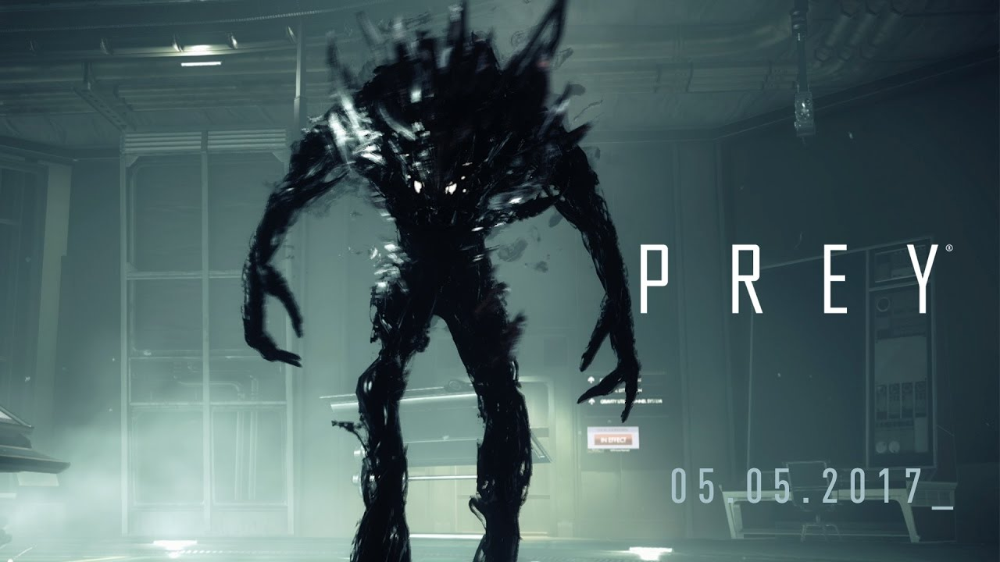
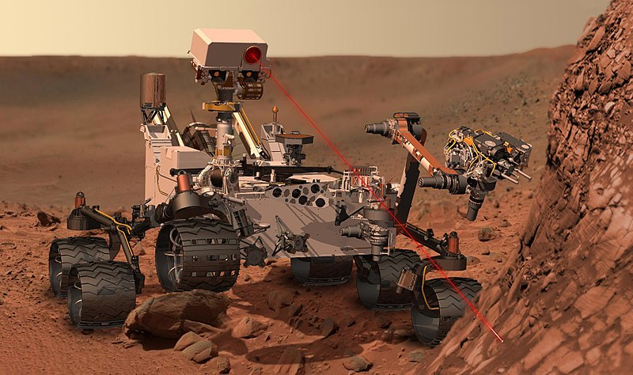

Blog
Prey, A Review.
Posted: xx-xx-xxxx
Prey is a first-person shooter video game developed by Arkane Studios and published by Bethesda Softworks. The game was released worldwide on 5 May 2017, for Microsoft Windows, PlayStation 4 and Xbox One. In Prey, the player controls Morgan Yu while exploring the space station Talos I, in orbit around Earth–Moon L2, where research into a hostile alien collective called the Typhon is performed. As the Typhon escape confinement, the player uses a variety of weapons and abilities derived from the Typhon to avoid being killed by the aliens while looking to escape the station. The player gains access to areas of the station through a Metroidvania style of progression by acquiring key items and abilities, eventually allowing the player to fully explore the station in an open world setting. Arkane's Prey is largely unrelated to the 2006 game Prey developed by Human Head Studios, and is considered a reimagining of the intellectual property set in a wholly new narrative. While Prey 2, a sequel to the 2006 game, had been planned by Human Head, it fell into development hell following transfer of the intellectual property from 3D Realms to Bethesda Softworks, and was eventually cancelled in 2014. Arkane's game does not use any of the planned sequel's assets, and only incorporates the previous game's name and the broad theme of the protagonist being hunted by aliens. Arkane built Prey as a spiritual sequel to System Shock, providing the player with several potential means of progressing within the game. ...Read More
Curiosity's showing some wear and tear
Posted: xx-xx-xxxx

There are holes in Curiosity wheels. There have always been holes -- the rover landed with
twelve holes deliberately machined in each wheel to aid in rover navigation. But there are new holes now:
punctures, fissures, and ghastly tears. The holes in Curiosity's wheels have become a major concern to the mission,
affecting every day of mission operations and the choice of path to Mount Sharp. Yet mission managers say that, so far,
the condition of the wheels has no effect on the rover's ability to traverse Martian terrain. If the holes are not causing
problems, why the rerouting? Is the wheel damage a big deal or not?
I've been asked a lot of questions about the wheels since we noticed the first rip on sol 411, and I've received many requests
for posts specifically addressing the wheel damage problem. At first, I dismissed people's concerns, because the mission seemed
unconcerned. But within a few months, the mission started becoming more alarmed by a sudden increase in the rate of damage.
They had to form a "Tiger Team" to understand what was causing the more-than-anticipated damage and to determine how best to
address the problem. Their work isn't over, but the Tiger Team had a major review meeting on August 7, and last week I had a
lengthy conversation with Project Manager Jim Erickson about the mission's status. I'm glad to finally be able to address your
questions about the wheels.
...Read More